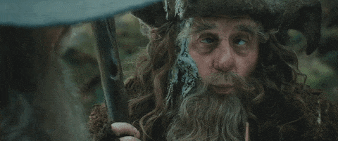

Radagast the Brown is a fictional character in J. R. R. Tolkien's legendarium. A wizard and associate of Gandalf, he appears briefly in The Hobbit, The Lord of the Rings, The Silmarillion, and Unfinished Tales. His role in Tolkien's writings is so slight that it has been described as a plot device, though scholars have noted his contribution to the evident paganism in Middle-earth. He played a more significant role in Peter Jackson's The Hobbit film series, where he was portrayed by Sylvester McCoy.
